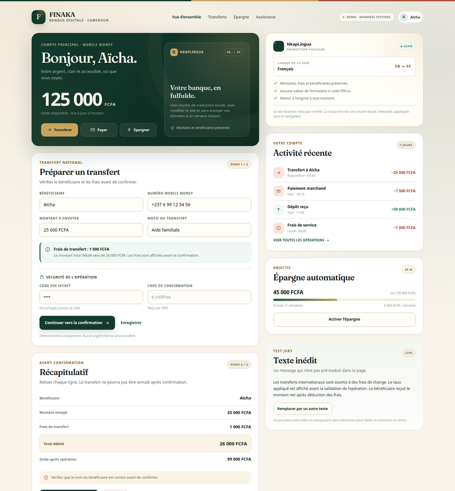
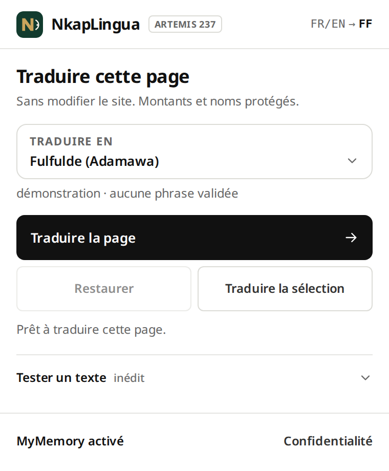

SAFINUM Innovate Challenge 2026
NkapLingua
Documentation technique et fonctionnelle
Une couche de traduction réversible, locale et non intrusive pour les interfaces de banque, de mobile money et de microfinance au Cameroun.
Équipe NkapLingua
Klein · Freedy · Marius
Yaoundé, Cameroun · novembre 2026
Dépôt
github.com/TSEFACKDEV/safinum-nkaplingua
Prototype de présélection
01 · Résumé
Les interfaces financières numériques camerounaises sont majoritairement en français ou en anglais. Une partie de la population ne maîtrise pas suffisamment ces langues pour comprendre un solde, des frais, une condition de crédit ou une alerte de sécurité.
Les traducteurs généralistes ne connaissent pas la terminologie financière et peuvent modifier un montant, un numéro de compte ou un avertissement. Dans un contexte financier, une erreur de sens est un défaut majeur.
Une extension navigateur qui ajoute une couche de traduction réversible à une interface existante, sans modifier son code source. Elle fonctionne seule avec un service cloud de secours, ou en 100 % local avec le backend NLLB. L’utilisateur clique, choisit sa langue, et peut revenir à l’original à tout moment. Le fulfulde est traduit automatiquement ; l’ewondo et le duala utilisent des phrases validées.
02 · Architecture
Le pipeline est générique : il ne dépend pas d’une page ou d’un fournisseur financier particulier.
| Élément | Choix | Pourquoi |
|---|---|---|
| Extension | Manifest V3, Chrome/Edge + Firefox 140+ | Déploiement sans intégration, permissions minimales. |
| Langues | Fulfulde (`fub`) + ewondo et duala en packs | Une langue majeure en MT, les autres en phrases validées. |
| Traduction | NLLB-200 distilled 600M | Meilleure qualité que M2M100 sur les phrases courtes fulfulde. |
| Moteur | NLLB local + MyMemory + packs | Extension autonome ; mode local prioritaire ; packs hors ligne. |
| Tests / CI | Pytest, GitHub Actions | Vérification reproductible sans télécharger le modèle. |
« Les frais sont de 1 000 FCFA. »
→ « Les frais sont de [[NUM_0]] FCFA. »
→ traduction NLLB avec le jeton préservé
→ contrôle : le jeton est présent exactement une fois
→ « Fedde jaɓɓorgo nden ko 1 000 FCFA. »
03 · Démonstration
La page FINAKA est fictive. Elle reprend les étapes demandées par le challenge : solde, frais, transfert, récapitulatif, erreur et alerte de sécurité.

Page de démonstration FINAKA : solde, transfert, récapitulatif, sécurité et test de contenu inédit.

| Exigence | Démonstration |
|---|---|
| 1. Adaptation de la langue | Traduction de la page dans la langue choisie, bouton de retour à l’original. |
| 2. Parcours financier | Solde, frais, transfert, récapitulatif avant confirmation. |
| 3. Préservation | Jetons pour les montants, contrôle des termes critiques, refus si un jeton manque. |
| 4. Indépendance | Aucune modification du site, injection à l’exécution, toggle original. |
| 5. Nouveau contenu | Popup « texte inédit » + traduction de sélection. |
04 · Sécurité et intégrité
La sécurité est traitée comme une propriété du pipeline, pas comme une promesse.
Avant l’envoi au backend, le content script remplace les nombres, URLs, emails et noms de bénéficiaires par des jetons :
« Le solde est de 125 000 FCFA. » → « Le solde est de [[NUM_0]] FCFA. »
« Transfert à Aïcha. » → « Transfert à [[NAME_0]]. »
Après traduction, chaque jeton doit être présent exactement une fois. Sinon, la traduction est refusée et l’original est conservé. Les jetons sont ensuite restaurés à l’identique.
| Risque | Réponse |
|---|---|
| Modification d’un montant | Jeton + contrôle d’unicité + refus si perte. |
| Lecture d’un mot de passe / OTP | Champs exclus du TreeWalker, aucune valeur lue. |
| Envoi de données à un tiers | Backend local prioritaire ; cloud divulgué et pseudonymisé ; pas de cookies. |
| Injection de HTML malveillant | textContent, Shadow DOM, CSP verrouillée. |
05 · Langues et validation
Le fulfulde adamawa utilise fuv_Latn (fulfulde nigérian, proche) comme approximation, avec l’orthographe AGLC comme référence. L’ewondo et le duala utilisent des packs de phrases validées par des locuteurs natifs. Aucun modèle ne prétend traduire ces deux langues automatiquement.
Source : Le solde est de 125 000 FCFA.
Sortie : Fedde jaɓande nden ko 125 000 FCFA.
Exemple indicatif, à valider par un locuteur natif.
20 phrases finance minimum, jamais utilisées pour l’entraînement.
2 à 3 locuteurs natifs, grille adéquation / fidélité / terminologie.
0 défaut majeur, 100 % des montants préservés, adéquation ≥ 3,5/5.
06 · Conformité et ressources
| Critère SAFINUM | Poids | Réponse NkapLingua |
|---|---|---|
| Fonctionnalité du prototype | 25 | Pipeline complet, page de démonstration, texte inédit. |
| Intégration et indépendance | 20 | Extension, aucune modification du site, rendu réversible. |
| Sécurité et préservation | 20 | Jetons, termes critiques, backend local, refus sécurisé. |
| Accessibilité et UX | 15 | Design system, focus, contrastes, lang, alertes lisibles. |
| Adaptation au nouveau contenu | 10 | Popup et sélection ; qualité à valider. |
| Faisabilité et documentation | 10 | README, doc technique, CI, licences. |
| Ressource | Licence | Usage |
|---|---|---|
| NLLB-200 distilled 600M | CC BY-NC 4.0 | Traduction, hackathon non commercial. |
| Corpus Adamawa Fulfulde–French | NOODL-1.0 | Évaluation / adaptation. |
| MyMemory Translation API | Service externe gratuit | Cloud de secours, texte pseudonymisé. |
| Packs ewondo / duala | À définir avec les contributeurs | Mémoires de traduction validées, hors ligne. |
| Common Voice Adamawa Fulfulde | CC0 1.0 | Audio optionnel. |
| Noto Sans / Fraunces | SIL OFL 1.1 | Typographie de l’interface. |
| Code NkapLingua | MIT | Réutilisation libre. |
07 · Livrables
https://github.com/TSEFACKDEV/safinum-nkaplingua
Branches : main, develop, klein, freedy, marius. CI GitHub Actions : backend mock, lint extension, Firefox lint, scan de secrets.
Option A — extension seule : charger le ZIP universel, puis ouvrir https://tsefackdev.github.io/safinum-nkaplingua/demo/.
Option B — 100 % local :
cd server
NK_DEVICE=cpu .venv/bin/uvicorn app:app --host 127.0.0.1 --port 8000
Puis ouvrir http://127.0.0.1:8000/demo.
Document préparé pour le SAFINUM Innovate Challenge 2026. Les opérations présentées sont simulées ; aucune donnée bancaire réelle n’est utilisée.